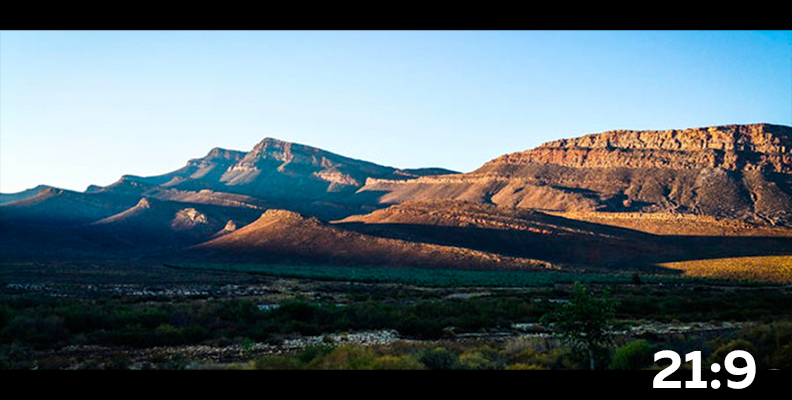

Palety kolorów:
RGB (Red, Green, Blue): Każdy składnik ma wartość od 0 do 255 (np. biały to RGB(255, 255, 255), a czarny to RGB(0, 0, 0)). CMYK (Cyan, Magenta, Yellow, Key/Black): Kolory są tworzone przez nakładanie barw na papier (np. czarny to CMYK(0, 0, 0, 100)). HEX (Hexadecimal): Reprezentacja kolorów w postaci szesnastkowej, np. czarny to #000000, biały #FFFFFF, czerwony #FF0000.
HEX (Hexadecimal): Reprezentacja kolorów w postaci szesnastkowej, np. czarny to #000000, biały #FFFFFF, czerwony #FF0000.
Rozdzielczości:
2K: 2048×1152 (16:9), 2048×1024 (2:1) 4K: 4096×2304 (16:9), 4096×2048 (2:1)Proporcje ekranu:
16:9: Współczesne monitory i telewizory (np. 1920x1080, 3840x2160). 21:9: Ultra szerokie monitory (np. 2560x1080, 3440x1440). 